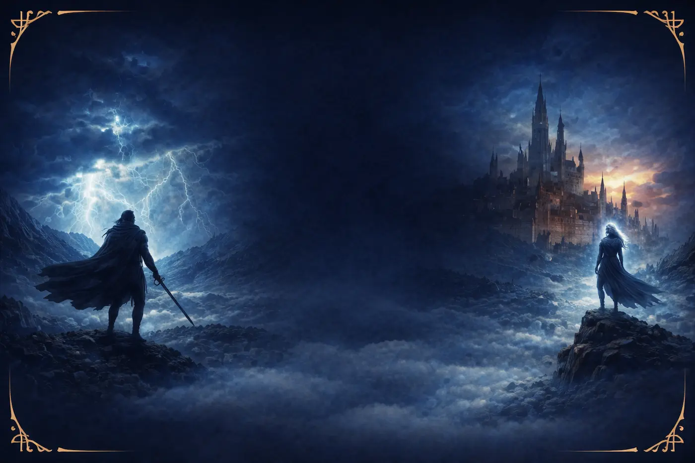

Find the right place to begin
The Cosmere includes several series and standalone novels that connect through a larger shared universe. That can make it exciting for fantasy readers, but it can also make it difficult to decide where to start.
This page helps readers compare major books and series, filter them by reading style, and explore which starting point best matches their interests.
Use the gallery below to compare books, then use the reading path buttons to get a recommendation based on the kind of story you want.
Book Gallery
Where Should You Start?
Choose the kind of reading experience you want, and this guide will suggest a strong place to begin in the Cosmere.
Recommended Starting Point
Select a reading style above to see a suggested place to begin.